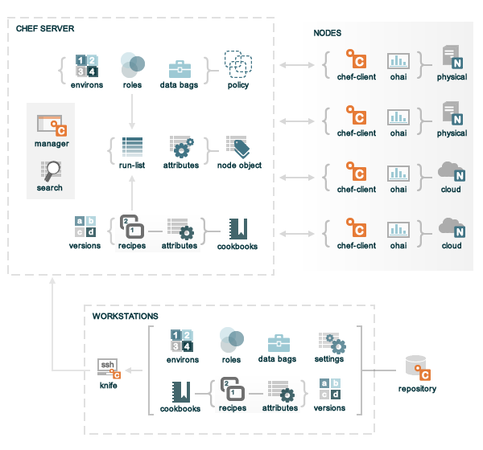

Chef is a systems and cloud infrastructure automation framework that makes it easy to deploy servers and applications to any physical, virtual, and cloud location, no matter the size of your infrastructure. Chef relies on abstract definitions (known as cookbooks and recipes) that are written in Ruby and are managed like source code. Each definition describes how a specific part of your infrastructure should be built and managed. Chef then applies those definitions to servers and applications, as specified, resulting in a fully automated infrastructure. When a new server comes online, the only thing that Chef needs to know is which cookbooks and recipes to apply.
The following diagram shows the relationships between the various elements of a Chef organization, including the nodes, the server, and the workstations. These elements work together to provide Chef the information and instruction that it needs so that it can do its job.
Chef is comprised of three main elements: a server, one (or more) nodes, and at least one workstation. The Chef server acts as a hub, ensuring that the right cookbooks are used, that the right policies are being applied, that all of the node objects are up-to-date, and that all of the nodes that will be maintained are registered and known to the Chef server. The workstation is the location from which most of the work happens, including authoring cookbooks, synchronizing with the repository, and uploading certain information to the server. The nodes host the various servers and applications in the cloud or on physical devices; each node contains a chef-client that performs the various infrastructure automation tasks that each node requires.
The following sections discuss these elements (and their various components) in more detail.
A node is a server or virtual server that is configured to be maintained by a chef-client. A node can be physical or cloud-based. A Chef organization can be comprised of any combination of physical and cloud-based nodes. The chef-client runs on each node and Ohai is used to collect data about the system so that Chef can use it. Each node keeps a cache that contains the most recent node object and all of the cookbooks that are used during configuration of the node.
There are two types of nodes that Chef can manage:
| Feature | Description |
|---|---|
| A cloud-based node is hosted in an external cloud-based service, such as Amazon Virtual Private Cloud, OpenStack, Rackspace, Google Compute Engine, Linode, or Windows Azure. Knife can create instances on these cloud-based services so that Chef can be used to deploy, configure, and maintain those instances. | |
| A physical node is typically a server or a virtual machine, but it can be any active device attached to a network that is capable of sending, receiving, and forwarding information over a communications channel. In other words, a physical node is a any active device attached to a network that can do both of the following: run a chef-client and communicate with a Chef server. |
Some important components on nodes include:
| Feature | Description |
|---|---|
A chef-client is an agent that runs locally on every node that is registered with the Chef server. When a chef-client is run, it will perform all of the steps that are required to bring the node into the expected state, including:
|
|
Ohai is a monitoring tool that is used to detect certain properties about the node environment and then report them back to Chef as node attributes. The types of properties Ohai reports on include:
Ohai reports each piece of data back to the Chef server as a node attribute. Later, while Chef configures a node, these attributes are used to ensure that certain properties remain unchanged. Ohai is part of the required configuration on each node that is registered with the Chef server. |
|
| For Chef, two important aspects of nodes are groups of attributes and run-lists. An attribute is a specific piece of data about the node, such as a network interface, a file system, or the number of clients that may be accepted. A run-list is an ordered list of recipes and/or roles that are run in an exact order. The run-list and node attributes comprise the node object, which is a JSON file that is stored on the Chef server and cached locally on every node by the chef-client. The chef-client ensures that the locally cached node object is up-do-date at the beginning of every Chef run and then uses the data stored in the node object while it brings the system to the desired state. |
Other sub-elements of nodes include exception and report handlers, certificates, and attributes. An exception handler is triggered when a defined aspect of a Chef run fails; a report handler is triggered when a defined aspect succeeds. An SSL certificate handshake is used between the chef-client and the Chef server to prevent a node from accessing data that it shouldn’t. Attributes can be specified in cookbooks that override the default attributes that are present on the node.
The workstation is a computer that is configured to run Knife, synchronize with the Chef repository, and to interact with a single Chef server. All of the most important details needed by Chef—cookbooks and recipes, role and environment data, important settings—are stored in the Chef repository using version source control. The workstation is the location from which most users of Chef will do most of their work, including:
Some important components of workstations include:
| Feature | Description |
|---|---|
Knife is a command-line tool that provides an interface between a local Chef repository and the Chef server. Knife helps users of Chef to manage:
|
|
The Chef repository is a location in which important configuration data is stored:
The repository is synchronized with a workstation. The Chef repository should be synchronized with a version control system, such as git, and then treated like source code. The Chef repository is made available from github. It can be cloned from github or downloaded as a tar.gz file (and then associated with another version source control system, such as Subversion, Mercurial, or Bazaar). Knife is used to upload repository data to the Chef server from the workstation. Once uploaded, that data is used to manage all of the nodes that are registered with the Chef server and to ensure that the correct cookbooks, environments, and roles are applied to the correct nodes. |
Chef assumes that system administrators and developers know best about how the infrastructure should be put together. Chef makes as few decisions on its own as possible. When a decision must be made, Chef uses a reasonable default setting that can be easily changed by the system administrators and developers, most often by defining attributes in cookbooks that take precedence over the default attributes present on nodes.
The Chef server acts as a hub, ensuring that the right cookbooks are used, that the right policies are being applied, that all of the node objects are up-to-date, and that all of the nodes that will be maintained are registered and known to the Chef server. The Chef server distributes configuration details (such as recipes, templates, and file distributions) to every node within the organization. Chef then does as much of the configuration work as possible on the nodes themselves (and not on the Chef server). This scalable approach distributes the configuration effort throughout the organization.
There are two types of Chef servers:
| Feature | Description |
|---|---|
Hosted Chef is a version of a Chef server that is cloud-based, scalable, and available (24x7/365), with resource-based access control and all of the automation capabilities of Chef, but without requiring it to be set up and managed within the organization. Hosted Chef is based on the idea that an infrastructure management tool should be built around a collection of API primitives. By using an API to talk to a cloud provider (such as Amazon Virtual Private Cloud, Windows Azure, or Rackspace), it allows the freedom to think of those primitives as building blocks. Chef only needs to know about the desired state, how it should get there, and what the proper functionality of that desired state should be. |
|
Private Chef is a version of a Chef server that is designed to provide all of the infrastructure automation capabilities of Chef, set up and managed from within the organization. Private Chef evolved out of a need for customers to have the same functionality provided by Hosted Chef, but located within the organization’s firewall. Private Chef is the same as Hosted Chef. Hosted Chef is the largest Private Chef deployment in the world. |
In addition to node objects, policy, and cookbooks, a Chef server includes:
| Feature | Description |
|---|---|
| Search indexes allow queries to be made for any type of data that is indexed by a Chef server, including data for a chef-client, data bags (and data bag items), environments, nodes, and roles. Chef has a defined query syntax that includes search patterns like exact, wildcard, range, and fuzzy. The search engine is based on Apache Solr and is run from a Chef server. A search is a full-text query that can be done from within a recipe or by using the search sub-command in Knife. | |
The Chef manager is a web-based interface that provides users of Chef a way to manage the following:
|
For Chef, two important aspects of nodes are groups of attributes and run-lists. An attribute is a specific piece of data about the node, such as a network interface, a file system, or the number of clients that may be accepted. A run-list is an ordered list of recipes and/or roles that are run in an exact order. The run-list and node attributes comprise the node object, which is a JSON file that is stored on the Chef server and cached locally on every node by the chef-client. The chef-client ensures that the locally cached node object is up-do-date at the beginning of every Chef run and then uses the data stored in the node object while it brings the system to the desired state.
Some important node objects include:
| Feature | Description |
|---|---|
| An attribute is a specific detail about a node, such as an IP address, a host name, a list of loaded kernel modules, the version(s) of available programming languages that are available, and so on. Attributes can be maintained in a variety of ways, such as by re-loading a cookbook (that contains new attributes), by using Knife, or by using JSON data. During a Chef run, a chef-client will save node attributes to the Chef server so they can be indexed for search. When a chef-client runs, all of the attributes saved on the Chef server are compared to the attributes cached on the chef-client. The chef-client will update the attributes based on attribute precedence rules that are defined for each attribute. | |
| A run-list is an ordered list of recipes and/or roles that are run in an exact order. A run-list is always specific to the node on which it runs, though it is possible for many nodes to have run-lists that are similar or even identical. The items within a run-list are maintained using Knife and are uploaded to the Chef server and stored as part of the node object for each node. Chef always configures a node in the exact order specified by its run-list and will never run the same recipe twice. |
Policy settings can be used to map the capabilities of Chef to organizational requirements. For example, custom environments can be mapped to an organization’s actual processes and workflow. Roles define server types, such as “web server” or “database server”. Certain types of data, such as passwords, user account data, and other sensitive items can be placed in data bags, which are located in a secure sub-area of Chef that can only be accessed by nodes that have the correct SSL certificates.
Some important aspects of policy include:
| Feature | Description |
|---|---|
| A role is a way to define certain patterns and processes that exist across nodes in a Chef organization as belonging to a single job function. Each role consists of one (or more) attributes and a run list. Each node can have one (or more) roles assigned to it. When a role is run against a node the configuration details of that node are compared against the attributes of the role, and then the contents of that role’s run list are applied to the node’s configuration details. When a chef-client runs, it merges its own attributes and run lists with those contained within each assigned role. | |
| A data bag is a read-only global variable that is stored as JSON data and is accessible from a Chef server. A data bag is indexed for searching and can be loaded by a recipe or accessed during a search. The contents of a data bag can vary, but they often include sensitive information (such as database passwords). The contents of a data bag can also be encrypted to prevent the contents of that data bag from being compromised. | |
| An environment is a way to map an organization’s real-life workflow to what can be configured and managed when using Chef server. Every Chef organization begins with a single environment called the _default environment, which cannot be modified (or deleted). Additional environments can be created, such as production, staging, testing, and development. Generally, an environment is also associated with one (or more) cookbook versions. |
A cookbook is the fundamental unit of distribution across Chef organizations. Each cookbook defines an automation scenario and then contains all of the components that are required to run it, including:
Chef uses Ruby as its reference language for creating cookbooks and defining recipes, with an extended DSL for specific resources. Chef provides a reasonable set of resources, enough to support many of the most common infrastructure automation scenarios; however, this DSL can also be extended when additional resources and capabilities are required.
Some important components of cookbooks include:
| Feature | Description |
|---|---|
| An attribute can be defined in a cookbook (or a recipe) and then used to override the default settings on node. When a cookbook is loaded during a Chef run, these attributes are compared to the attributes that are already present on the node. When the cookbook attributes take precedence over the default attributes, Chef will apply those new settings and values during the Chef run on the node. | |
A recipe is the most fundamental configuration element within the Chef environment. A recipe:
|
|
| A cookbook version represents a specific set of functionality that is different from the cookbook on which it is based. A version may exist for many reasons, such as for ensuring that the correct versions of third-party components are being used or to provide an update to a cookbook that fixes previous issues or adds new improvements. A cookbook version can be defined using syntax and operators, it can be associated with environments, cookbook metadata, or run-lists, and it can be frozen (to prevent unwanted updates from being made). A cookbook version is a cookbook, from the perspective of the repository and how cookbooks are stored on the Chef server and pushed out to one (or more) nodes. |
Chef will run a recipe many times on the same system and will create the same system state each time. When a recipe is run against a system, but nothing has changed on either the system or in the recipe, Chef won’t change anything.
In addition to attributes, recipes, and versions, the following items are also part of cookbooks:
The key underlying principle of Chef is that you (the user) knows best about what your environment is, what it should do, and how it should be maintained. Chef is designed to not make assumptions about any of those things. Only the individuals on the ground—that’s you and your team—understand the technical problems and what is required to solve them. Only the organization—yours—understands the human problems (skill levels, audit trails, and other internal issues) that are unique to your organization and whether any single technical solution is viable.
The idea that you know best about what should happen in your environment goes hand-in-hand with the notion that you still need help. It is rare that a single individual knows everything about a very complex problem, let alone knows all of the steps that may be required to solve them. The same is true with tools. Chef provides help with infrastructure management. And Chef can help solve very complicated problems. Chef also has a large community of users who have a lot of experience solving a lot of very complex problems. That Chef community can provide knowledge and support in areas that your organization may not have and (along with Chef) can help your organization solve any complex problem.
For history of Chef, where it came from and how it evolved, watch these two (short) videos:
For more information about Opscode, cookbooks for Chef, and the Chef community: